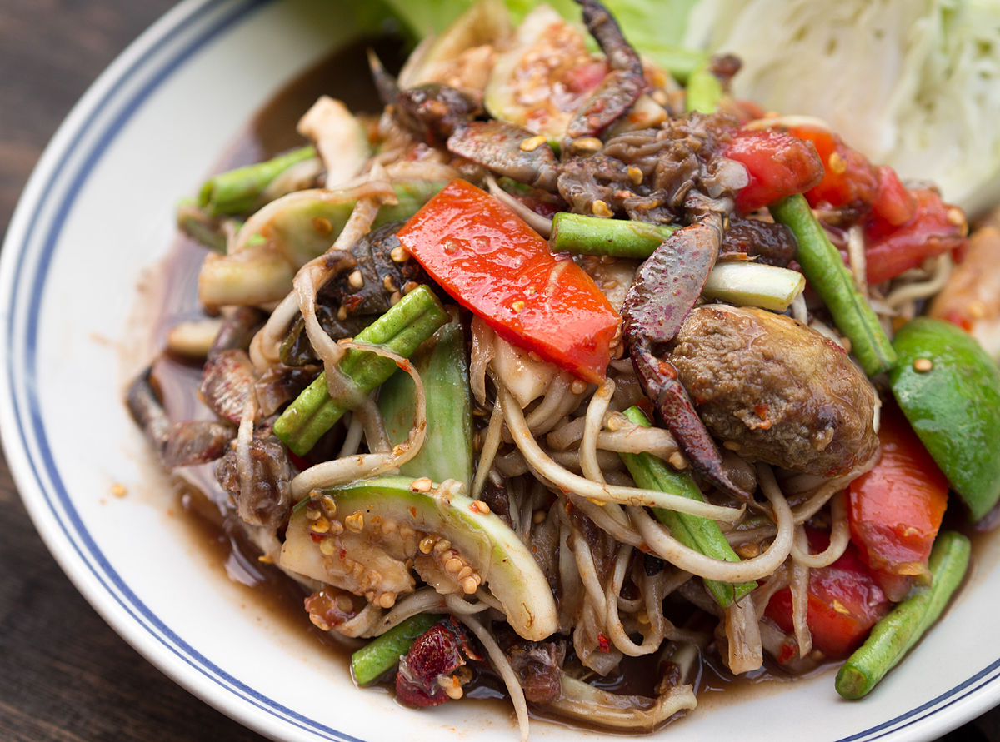

Name:
Type:
Course:
Main ingredients:
Som Tam
Thai cuisine
Side Dish
Papaya
Green papaya salad is a spicy salad made from shredded unripe papaya. Probably originating from ethnic Lao people, it is also eaten throughout Southeast Asia. Locally known in Cambodia as bok l'hong, in Laos as tam som or the more specific name tam maak hoong, in Thailand as som tam, and in Vietnam as gỏi đu đủ. Som tam, the Thai variation, was listed at number 46 on World's 50 most delicious foods compiled by CNN Go in 2011 and updated in 2018.